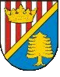

Nisko-Zarzecze - ulica Krzeszowska
 W wiosce Zarzecze powiat Nisko droga wojewódzka nr 858 nazywa siê ul. Krzeszowska. Tyle tylko, ¿e w powiecie ni¿añskim te¿ jest miejscowoœæ o nazwie "Krzeszów" wiêc nazwa ul. Krzeszowskiej zapewne zwi¹zana jest z tamtym Krzeszowem.